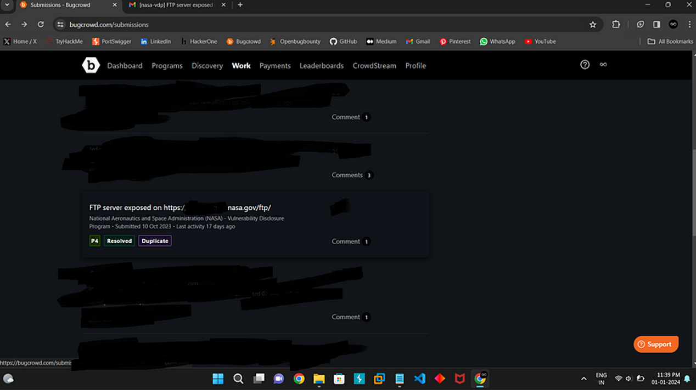

Hello Hackers,

I hope you are all doing well. I apologize for not sharing any bug bounty stories or articles in the past six months. I’ve been busy with my MCA degree studies. After completing my first semester and achieving an 8.5 SGPA, I finally have some time to share an interesting experience with you.
Today, I’ll be sharing a story about how I reported a bug to NASA through Bugcrowd and earned a place in NASA’s Hall of Fame.
The story begins with my journey to Ahmedabad for the BSides Ahmedabad event one month ago. You can find a detailed article about my experiences and what I gained from the event on Here. During the journey, with five hours to spare, I decided to make productive use of my time. I opened my laptop and mobile, brainstormed ideas, and eventually, I landed on the concept of utilizing Google Dorks.
One particular query caught my attention:
indexof:/ftp site:nasa.gov
After some thorough searching, I stumbled upon a location (which I cannot disclose for security reasons) hinting at NASA’s FTP server. To my surprise, I found that I could access the FTP server without any restrictions or passwords. In addition to this discovery, I identified three text injection bugs.

Upon returning from BSides Ahmedabad, I wasted no time and reported my findings to NASA through Bugcrowd. Within a week, I received a response from NASA. They informed me that the bug related to the FTP server was a duplicate, already reported by another researcher and resolved. However, the other three bugs were accepted, and NASA expressed gratitude for my report. They added my name to their Hall of Fame list.

That concludes the story. I hope you find it enlightening and that it inspires you to continue learning. Feel free to reach out if anyone needs assistance. Thank you and signing out,
Thank You,
MR.X FACTOR
🔗 Handles:
- Linktree: https://linktr.ee/mrxfact0r_99